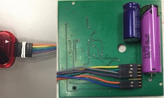

For Future Reference
Since all of our team are graduating seniors, we will not be able to continue work on this project. However, we do wish to leave some helpful tips and instructions to anyone following in our wake who wishes to continue the work.
Programming the PEB
Wiring up the PEB
A lot of trial and error went into wiring up the PICKit 3 to the PEB. Luckily, we found a working configuration. Note that the colors coming out of the PICKit are exactly the colors going into the PEB.

For the curious, the colors correspond to the following input/outputs:
- Yellow: target power (VDD)
- Green: ground (VSS)
- Gray: ICSP low-voltage programming pin
- Violet: ICSP clock line
- Orange: VPP, Programming mode voltage
- Blue: ICSP data line
Once you've matched up all the pins, the PICKit3 should work like a charm.
Programming Environment
We used MPLABX, a free IDE from Microchip. It is available at the time of this writing for Windows, Mac, and Linux. The authors have installed and used it successfully on Windows 7 and Linux. 64-bit Linux users should be aware that some 32-bit compatibility libraries may need to be installed before the IDE will install successfully.
The IDE provides settings options for the PICKit3. We chose to perform programming at 4.75V, since this was the lowest voltage the PEB's PIC16 seemed to respond to during our experiments.
Future work for the PEB
We proved that an information-disclosure attack was possible for the PEB, but we did not implement that attack fully, due to time constraints. Future directions for work with the PEB might include:
- Implement an IrDA protocol stack. This would allow use of standard IrDA hardware and tools with the PEB.
- Implement some sort of bit-banging protocol. This would allow the PIC16 to communicate through its programming header pins with the outside world.
Once communications are working, directions for progress might include:
- Obtaining a hexdump of the flash memory's contents. This would require the PIC16 to communicate via SPI with the flash memory chip, then send the bits via one of the communications options.
- Reverse-engineering the PEB/iVotronic infrared protocol. According to the Everest and USENIX reports, this protocol is not terribly complex, so it may be possible to reverse engineer, given time and tools.
Future work for the iVotronic
Future directions for work with the iVotronic might include:
- Working directly with the 2 MB memory modules. This might require special breadboards, as the pins are more narrowly spaced than the spacing of most commonly available breadboards. They can probably be communicated with over SPI.
- JTAG interface / OpenOCD configuration. We include in the repo an early version of an OpenOCD configuration file for use in JTAG'ing the iVotronic. Unfortunately, since we didn't know the scan-chain length, we were not able to make much progress on this. The config file is based strongly on what we were able to find in Intel's BSDL files for the i386EX. Getting JTAG working would allow tinkering/debugging the iVotronic.
< Possible Attack Vectors | Top | Nothing >